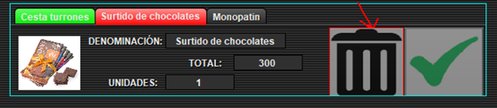

La etiqueta se volverá de color rojo en el caso de que se eliminen todas las unidades que había de ese artículo. Una vez eliminado (todas las unidades de ese artículo) se deshabilitan ambos botones, si no queremos que se elimine el artículo tenemos que volver atrás, se mantendrán en la cesta aquellos que no hemos borrado, por lo que solo tenemos que añadir a la cesta de nuevo este artículo, ya que los otros no se eliminarán (a excepción de aquellos que hemos borrado como este).
